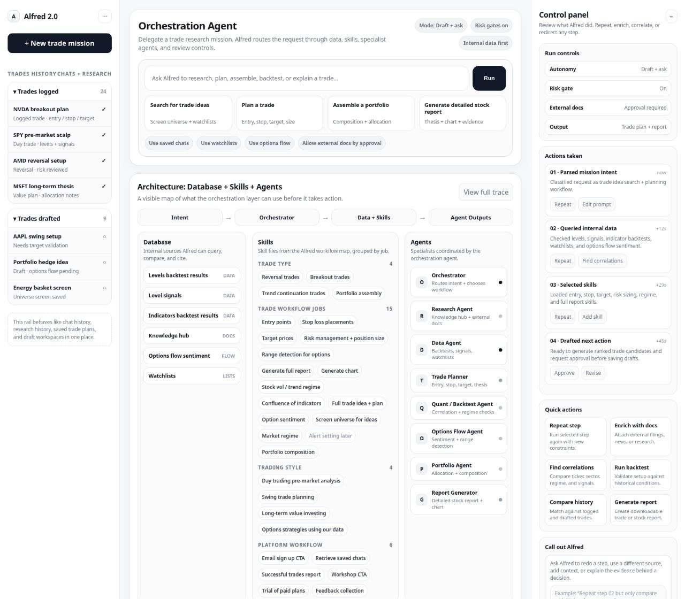

Pending home sales forecast

National pending home sales, predicted against the actual series, 2021 through 2026. The forecast follows the seasonal turns. The gap between the lines is the miss.
Full-stack and cloud. Production AI, data, and risk systems.
Each block is a separate project. The page shows the result or the delivery scope. It does not include data sources, implementation, or trading rules.
National pending home sales, predicted against the actual series, 2021 through 2026. The forecast follows the seasonal turns. The gap between the lines is the miss.

Out-of-sample discrimination by test year, 2009 through 2024. Each bar is a year the model had not seen.

Yearly result and trade count, 2017 through 2024. This is the scoreboard. The rule that produced it is not on this page.

A workspace for research, planning, and review. A draft stays a draft until a person sends it on.

The model drafts and classifies. One service is allowed to act. Repeated requests do not double-apply.

Feeds land once, checks run before publish, and downstream tools use one door. They do not get a database login.
A desktop lab for minute-level futures data. Integrity is checked before a study runs. The lab does not place trades.
Voice or text comes in. An execution plan goes out. Every request leaves an audit record.
A validation run for full-text news coverage across countries. Each query produced a review report.
Backtests across a large symbol set. Each test has its own equity curve and covers roughly a decade.
A production pipeline that replaced a manual bet log with structured records.
A monitor that watches live prices and sends an alert to an operator.